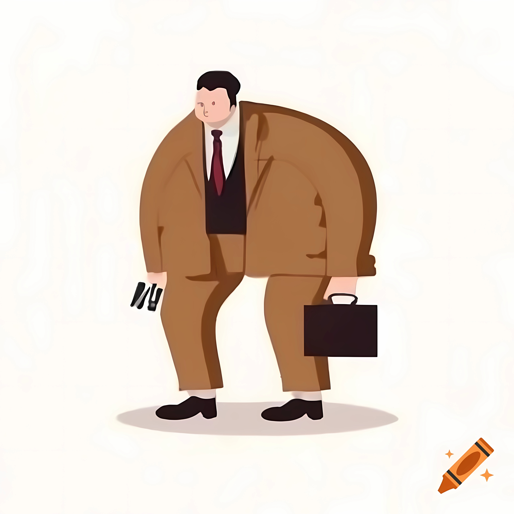

Ilustración colorida que representa una colección de objetos con un estilo moderno y minimalista.
Diseño de logotipos
Nuestro servicio de diseño de logotipos se enfoca en crear identidades visuales que capturan la esencia de cada marca. Con la dirección de tres apasionados diseñadores, nos especializamos en transformar conceptos abstractos en símbolos visuales impactantes y memorables.
Utilizamos un enfoque colaborativo, trabajando estrechamente con nuestros clientes para asegurar que el logotipo no solo sea estéticamente atractivo, sino que también comunique efectivamente los valores y la misión de la marca.
Branding e Identidad Visual
Nuestro servicio de branding e identidad visual es el corazón de nuestra empresa de diseño, dirigida por tres creativos apasionados. Nos enfocamos en crear marcas que hablen por sí mismas, reflejando la esencia y valores de cada cliente.
Desde logotipos impactantes hasta paletas de colores únicas, transformamos ideas abstractas en identidades visuales memorables. Trabajamos codo a codo con nuestros clientes, asegurándonos de que cada detalle esté alineado con su visión y objetivos.
Ya sea que estés comenzando desde cero o buscando revitalizar tu marca existente, estamos aquí para ayudarte a definir y expresar tu identidad de la manera más auténtica y efectiva posible.

Ilustración caricaturesca de un hombre de negocios, resaltando su figura con un diseño humorístico y llamativo.